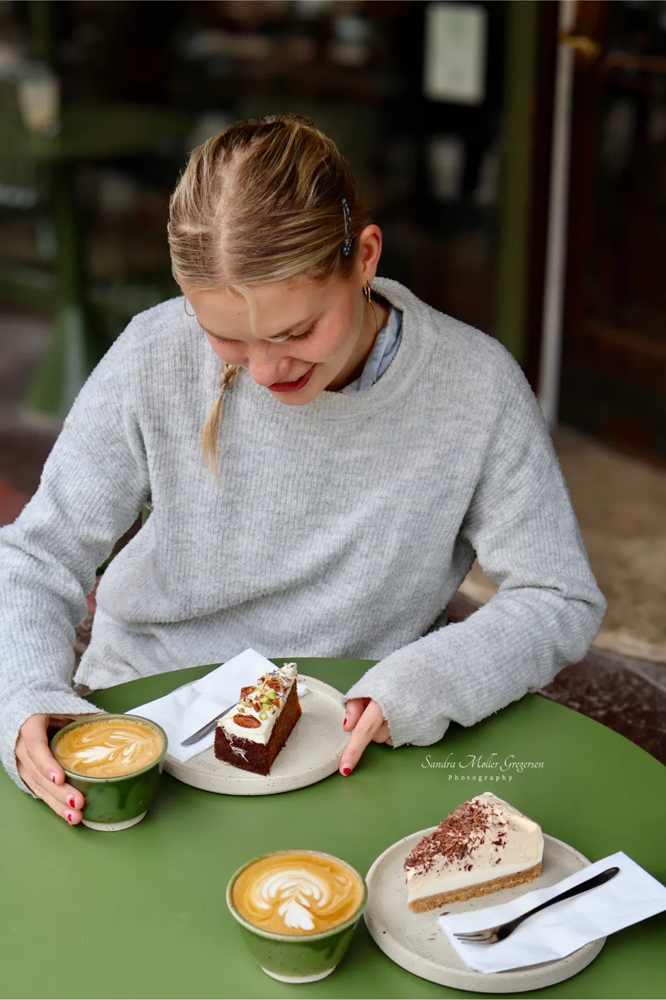

SandraFotografi
“alle starter et sted.”
Jeg fotograferer med et brugt Canon-kamera og et helt almindeligt kit-objektiv, og jeg lærer lidt mere for hvert billede. Her samler jeg dem, jeg er gladest for indtil videre.

Issue #01001